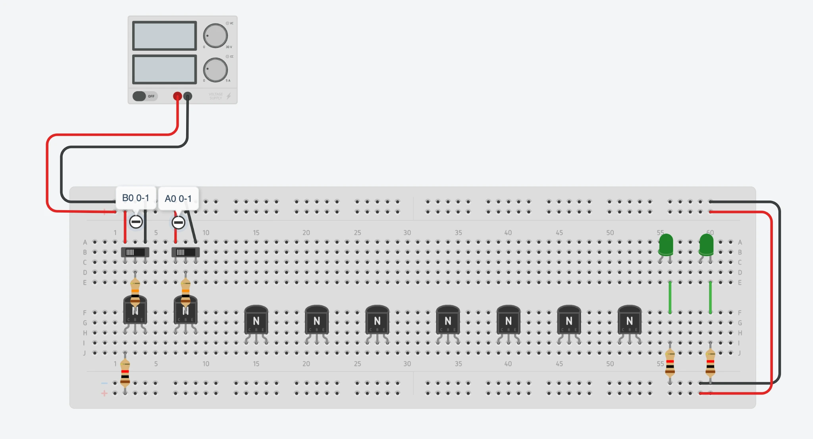

01 · Dos relés aos transístores
Depois da experiência com o somador de dois bits com seis relés, surgiu o interesse em testar uma solução baseada em transístores discretos. Se a montagem eletromecânica já exigiu algum trabalho, esta abordagem mostra que mesmo a soma de apenas um bit de cada número pode envolver uma quantidade considerável de componentes.
Um relé DPDT dispõe de dois conjuntos de contactos inversores. Já um transístor NPN funciona, neste contexto, como um interruptor eletrónico. Para reproduzir certas funções lógicas é necessário combinar vários transístores e resistências. Na configuração escolhida, prevê-se utilizar nove transístores para um único meio somador. Não se trata de um número mínimo universal: existem outras topologias.
02 · O que se pretende calcular
Dois interruptores, identificados como B0 e A0, representam dois valores binários de um bit. Dois LEDs apresentam o resultado: o LED de peso 1 corresponde à soma (S) e o de peso 2 ao transporte (C, carry). Quando ambos os interruptores estão ligados, 1 + 1 resulta em 10, ou seja, dois em decimal.
C = B0 AND A0
O circuito é um meio somador: não recebe um transporte de entrada.
| B0 | A0 | LED 2 | LED 1 | Resultado |
|---|---|---|---|---|
| 0 | 0 | 0 | ||
| 0 | 1 | 1 | ||
| 1 | 0 | 1 | ||
| 1 | 1 | 2 |
Esta tabela apresenta os resultados teóricos esperados, não medições da montagem.
03 · Componentes e complexidade
A configuração experimental utiliza quatro portas NAND e uma inversora, implementadas com transístores NPN e resistências. A primeira disposição reúne os nove transístores, dois interruptores e dois LEDs numa única breadboard grande. Os valores das resistências e os níveis lógicos ainda serão verificados.
Os transístores são muito mais pequenos e rápidos do que os relés, mas isso não significa que uma montagem com componentes discretos tenha necessariamente menos peças. É precisamente esta diferença que ajuda a compreender a importância dos circuitos integrados: várias funções lógicas podem ser reunidas num único componente.
04 · Próximos testes
A primeira etapa consiste em testar uma porta NAND isoladamente. Depois serão interligadas as restantes portas, verificados os níveis de tensão e testadas as quatro combinações das entradas. A eventual necessidade de transístores adicionais para comandar os LEDs será avaliada durante os testes.
Tal como na experiência com relés, o interesse é didático: perceber como se constrói a aritmética binária a partir de componentes elementares. A experiência será documentada à medida que a montagem evoluir.